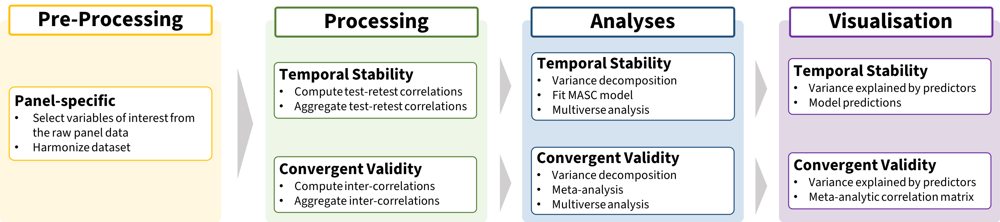

Below are step-by-step instructions on how the files in the OSF repository (link) are used in the analyses described in the paper.

| No. | Description | Input | Scripts | Output |
|---|---|---|---|---|
1 |
For each PANEL, a .xlsx file with the variable information about each risk measure was created by adapting the information from the sample’s main variable codebook. Separate tabs include different classes of variables (e.g., variable codes for respondent demographics).Then an R script reads each sheet from each .xlsx file and creates a list object containing the information from all the samples saved as separates data frames. |
var_info/codebook_main.xlsx |
var_info/code/merge_var_info.R |
var_info/panel_var_info.rds |
2 |
For each PANEL, an R script reads the panel_var_info.rds file and Raw Panel Data file(s) to select the relevant variables, and creates a .csv file (long format) with the relevant (and if needed, re-coded) raw panel data, as well as a csv file with the main information on the different risk preference measures (e.g., measure category, domain, and sub-domain). Simultaneously, a summary overview of the data are created for inspection- These pre-processed files are in the same format for all panels |
var_info/panel_var_info.rds |
pre_processing/code/PANEL_preproc.R |
local_drive/PANEL_proc_data.csv |
3 |
The information on the final measures included in the analyses for each sample are combined into a single R list object to be used for data processing |
var_info/PANEL_risk_var_info.csv |
var_info/code/merge_risk_info.R |
var_info/panel_risk_info.rds |
| No. | Description | Input | Scripts | Output |
|---|---|---|---|---|
1 |
For each panel, an R script reads the PANEL_proc_data.csv and computes the test-retest correlations for different time intervals for each measure using the function calc_retest.R. In addition, the relevant information for each risk preference measure is joined to the set of test-retest correlations. Altogether, this is saved as a .csv file. The PANEL_retest.csv file has the same format for all panels. |
local_drive/PANEL_proc_data.csv var_info/panel_risk_info.rds |
processing/code/temp_stability/calc_retest.R |
processing/output/temp_stability/PANEL_retest.csv |
2 |
Using merge_retest.R and the PANEL_retest.csv files, a complete_retest.csv file is created with all the retest correlations |
processing/output/temp_stability/PANEL_retest.csv |
processing/code/temp_stability/merge_retest.R |
processing/output/temp_stability/complete_retest.csv |
3 |
Using calc_agg_retest.R and the complete_retest.csv file, compute aggregated correlation coefficients based on different criteria (e.g., minimum number of responses) and create a complete_agg_retest_yb..csv files |
processing/output/temp_stability/complete_retest.csv |
processing/code/temp_stability/calc_agg_retest.R |
processing/output/temp_stability/complete_agg_retest_yb..csv |
| No. | Description | Input | Scripts | Output |
|---|---|---|---|---|
1 |
For each panel, an R script reads the PANEL_proc_data.csv and computes the inter-correlations between different measures for different time intervals using the function calc_intercor.R. In addition, the relevant information for each pair of risk preference measure is joined to the set of test-retest correlations. Altogether, this is saved as a .csv file. Th PANEL_intercor_data.csv file has the same format for all panels. |
var_info/panel_var_info.rds |
processing/code/convergent_val/calc_bivar.R |
processing/output/convergent_val/PANEL_intercor_data.csv |
2 |
Using merge_intercor.R and the PANEL_intercor_data.csv files, a complete_intercor.csv file is created with all the inter-correlations. |
processing/output/convergent_val/PANEL_intercor_data.csv |
processing/code/convergent_val/merge_intercor.R |
processing/output/convergent_val/complete_intercor.csv |
3 |
Using calc_agg_intercor.R and the complete_intercor.csv file, compute aggregated correlation coefficients based on different criteria (e.g., minimum number of responses) and create a complete_agg_intercor_yb..csv files |
processing/output/convergent_val/complete_intercor.csv |
processing/code/convergent_val/calc_agg_intercor.R |
processing/output/convergent_val/complete_agg_intercor_yb..csv |
| No. | Description | Input | Scripts | Output |
|---|---|---|---|---|
1 |
Variance Decomposition: The var_decomposition.R script reads the complete_retest.csv an conducts variance decomposition for all the test-retest correlations (i.e., omnibus analysis) and separately for each measure category. |
processing/output/temp_stability/complete_retest.csv |
analysis/code/temp_stability/var_decomposition.R |
analysis/output/temp_stability/shapley_values_.retest.csv |
2 |
Fitting the MASC model: Read the complete_agg_retest_yb..csv file using the corresponding R script (i.e., masc_..R) and fit the (meta-analytic) non-linear mixed-effects model (i.e.,MASC). Check model fit and convergence diagnostics. |
processing/output/temp_stability/complete_agg_retest_yb..csv |
analysis/code/temp_stability/masc_..R |
analysis/output/temp_stability/masc_..rds |
3 |
Multiverse Analysis - Variance Decomposition: The var_decomposition_multiverse.R script reads the complete_retest.csv, using and conducts variance decomposition for all the test-retest correlations (i.e., omnibus analysis) and separately for each measure category with the different sub datasets of retest correlation to assess how consistent the variance explained by each effect is. |
processing/output/temp_stability/complete_retest.csv |
analysis/code/temp_stability/var_decomp_retest_multiverse.R |
analysis/output/temp_stability/shapley_values_._retest_multiverse_summary.csv |
4 |
Multiverse Analysis - Fitting the MASC model: Using the masc_._multiverse.R fit the (meta-analytic) non-linear mixed model (i.e.,MASC) using each sub dataset of aggregated correlations coefficients from the complete_agg_retest_yb..csv files and save a summary of the output to assess the consistency of the results. |
processing/output/temp_stability/complete_retest_wcor_.yrbin_.n_.mo.rds |
analysis/code/temp_stability/masc_._multiverse.R |
analysis/output/temp_stability/masc_._multiverse_summary.csv |
| No. | Description | Input | Scripts | Output |
|---|---|---|---|---|
1 |
Variance Decomposition: The var_decomposition.R script reads the complete_intercor.csv to conduct variance decomposition for the inter-correlations. |
processing/output/convergent_val/complete_intercor.csv |
analysis/code/convergent_val/var_decomposition.R |
analysis/output/convergent_val/shapley_values_.intercor.csv |
2 |
Meta-Analysis and Meta-Regressions: The brms_ma.R script reads the complete_agg_intercor_yb..csv files and fit the different Bayesian random effects models (i.e., intercept only and with covariates) |
processing/output/convergent_val/complete_agg_intercor_yb..csv |
analysis/code/brms_ma.R |
analysis/output/convergent_val/fit_convergent_ma_..rds |
3 |
Multiverse Analysis - Variance Decomposition: The var_decomposition_multiverse.R script reads the complete_intercor.csv and conducts variance decomposition for the inter-correlations with the different sub datasets of inter-correlation to assess the consistency of the variance explained by each effect is. |
processing/output/convergent_val/complete_intercor.csv |
analysis/code/var_decomposoiion_multiverse.R |
analysis/output/shapley_values_._intercor_boot_multiverse_summary.csv |
4 |
Multiverse Analysis Meta-Analysis and Meta-Regressions: Using the brms_ma_multiverse.R fit the different Bayesian random effects meta-analytic models (i.e., intercept only and with covariates) using each sub dataset of aggregated correlations coefficients from the complete_agg_intercor_yb..csv files and save a summary of the output to assess the consistency of the results. |
processing/output/convergent_val/complete_agg_intercor_yb..csv |
analysis/code/convergent_val/brms_ma_multiverse.R |
analysis/output/convergent_val/brms_ma_mulriverse_summary.csv |
| No. | Description | Input | Scripts | Output |
|---|---|---|---|---|
1 |
The plot_measure_cor_overview.R script reads the complete_retest.csv file and plots the number of measures across retest intervals and the distributions of retest correlations. |
processing/output/temp_stability/complezeretest |
figures/code/temp_stability/plot_measure_cor_overview.R |
figures/output/temp_stability/meas_count.png |
2 |
The plot_var_decomposition.R script reads the shapley_values_.retest.csv and shapley_values._retest_boot.csv to plot the proportion of variance explained by different factors |
analysis/output/temp_stability/shapley_values_.retest.csv |
figures/code/temp_stability/plot_var_decomposition.R |
figures/output/temp_stability/shapley_decomp_retest_fig.png |
3 |
The plot_masc_pred.R script reads the masc_..rds files and plots the parameter estimates and model predictions. |
analysis/output/temp_stability/fit_masc_..rds |
figures/code/temp_stability/plot_masc_pred.R |
figures/output/temp_stability/masc_pred_fig.png |
| No. | Description | Input | Scripts | Output |
|---|---|---|---|---|
1 |
The plot_var_decomposition.R script reads the shapley_values_intercor.csv and shapley_values_intercor_boot.csv files to plot the proportion of variance explained by different factors |
analysis/output/convergent_val/shapley_values_.intercor.csv |
figures/code/convergent_val/plot_var_decomposition.R |
figures/output/convergent_val/shapley_decomp_convergent.png |
1 |
The plot_cor_matrix.R script reads the fit_convergent_ma_..rds files and creates several correlation matrices with the pool estimates |
analysis/output/fconvergent_val/fit_convergent_..rds |
figures/code/convergent_val/plot_cor_matrix.R |
figures/output/convergent_val/cor_matrix_fig.png |